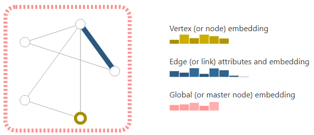

论文精读 GNN
文章链接：A Gentle Introduction to Graph Neural Networks (distill.pub)
1.前言
图这个数据结构相对于之前讨论的文本（文本是一个序列）、图片（图片是一个矩阵），图相对来说更加复杂一点。
图是一个很一般化的架构，十几年前，研究者提出了针对图的神经网络（图神经网络，GNN），最近它们在能力和表达上都有增强。
图神经网络的实际应用（starting to，图神经网络还是一个比较新的领域，在应用上刚起步）
- 药物的发现
- 物理模拟
- 虚假新闻检测
- 车流量的检测
- 推荐系统
本文旨在探索和解释现代的图神经网络
- 什么数据可以表示成一张图
- 图和别的数据有什么不同，为什么要做图神经网络，而不是使用最简单的卷积神经网络等
- 构建了一个GNN，看各模块的具体结构
- 提供了一个GNN的playground
图神经网络所关注的重点
- 怎样把所想要的信息表示成向量
- 这些向量是不是能够通过数据来学到
2.什么是图
图是用来表示entity（实体）之间的关系
- 实体就是一个点（node，顶点）
- 关系就是一个边（edge）
2.1 图的构成
- V：顶点
- E：边
- U：整个图（全局信息）
- attribute：每个顶点、每条边和整个图表示的信息
2.2 图的属性

- 顶点（黄色）：可以用一个embeding（向量）来表示它里面的属性，一共有六个值，高矮表示值的大小
- 边（蓝色）：可以使用向量来表示，长度可以和顶点不一样，这里使用的是一个长度为8的向量，即边中所有的属性用一个长度为8的向量来表示
- 全局信息（粉色）：可以用一个长为5的向量来表示
2.3 图的分类
- 有向图：
- 无向图
3.数据如何表示为图
3.1 将图片表示成一张图
假设有一张高宽都为244的RGB三通道图，一般来说会把它表示成一个三个维度的tensor（在输入卷积神经网络的时候用的是tensor），但是也可以把它当作一个图，它的每个像素就是一个点，如果两个像素之间是连接关系的话，就连接一条边。
- 左边表示图片；
- 右边是表示成的邻接矩阵；
- 左边图片中00表示第0列第0行，它与邻接矩阵中的对应关系入下图中蓝色圆圈所示，这样就将图片中的每个像素都映射成了图上面的点；
- 中间的矩阵叫做邻接矩阵，它的每一行是一个顶点，每一列也是一个顶点，如果第 i 行和第 j 列之间值为1（图中蓝色的点）的话就表示第 i 个结点和第 j 个节点之间是有边的，每一个蓝色的点表示图中的一条边，剩下白色的点表示这些点之间是没有边的，所以叫做邻接矩阵，通常是一个很大的非常稀疏化的矩阵
3.2 将文本表示为图
文本可以认为是一条序列，可以把其中每个词表示成顶点，那么每个词和下一个词之间有一条有向边（上一个词和下一个词之间有一条指向下一个词的有向边，在图上面叫做有向的路）

3.3 其他图形式数据
（1）分子示意图
- 左图是一个分子的图片，由一些原子通过一些作用力连接在一起
- 每一个原子可以表示成图里面的顶点，如下图右图所示，如果原子之间是相连的就可以连成一条边
（2）人物关系网络图
《奥赛德》剧中所有人物之间的交互图（关系网络）
- 在这个剧中任何人物如果在一个场景中同时出现的话，就会将其演绎成一条边
- 处在边缘的人物可能就是跟其他人交互比较少
空手道俱乐部的社交网络图
该俱乐部中有两个老师，每个老师会跟一些同学比赛，然后可以把每一个老师跟每一个同学做过比赛的情况放在一起，这样也会得到一个社交网络图
3.4 实际中图的大小
- grapgh表示图的个数
- node表示顶点数
- edge表示边的个数
- mean表示平均每个点所连接的边的数量
- min表示图中一个顶点所连接的边的数量的最小值
- max表示图中一个顶点所连接的边的数量的最大值
- 每一行就是一张图
- 第一行是一个空手道俱乐部的社交网络图
4.图结构可以提出什么问题？
总的来说就是三类问题
- graph-level：对整个图进行识别
- node-level：对顶点的属性进行判断
- edge-level：对边的属性进行判断
4.1 图层面（graph-level）
目标：预测整个图的性质
下图左边是一些原始的图，任务是要找出哪些图中含有两个圆环（给定一张图，然后对图进行分类）：
- 这里是一个很简单的问题，不需要使用到机器学习，只需要使用简单的编程，沿着图遍历一下就可以的
- 对于复杂一点的任务，可以借助图神经网络
4.2 顶点层面（node-level）
目标：预测顶点属于哪一个图
下图是上述空手道俱乐部的社交关系图，假如某一天两个老师不合决裂了，所有的学生要对这两个老师进行站队（站在某一个老师那边）
4.3 边层面（edge-level）
给定一张图片，先通过语义分割及那个图片中的人物、背景拿出来之后，然后判断人物之间的关系（顶点已经有了，需要判断顶点之间的边的属性）
5.深度学习用在图中存在的问题
将神经网路用在图上面最核心的问题是：如何表示图使得它能够和神经网络兼容
图上面有四种信息
- 顶点的属性
- 边的属性
- 全局信息
- 连接性：每条边到底连接的是哪两个点
前三个比较容易，因为都能够使用向量来进行表示，神经网络对向量是友好的，问题在于如何表示连接性。
5.1 邻接矩阵表示存在问题
连接性可以用邻接矩阵来表示：如果有n个顶点的话，邻接矩阵就是 n*n 的矩阵，其中如果两个顶点直接相连的话值就为1，否则为0，这样就能得到一个方形的矩阵。
但是用邻接矩阵来表示连接性的话也存在很多问题
- 邻接矩阵可能会非常大：按照正常的存放可能存不下，由于它是一个稀疏矩阵，可以用稀疏矩阵的形式来进行存储，使得它至少在存储上是可行的。但是如果处理稀疏矩阵的话，高效地处理稀疏矩阵比较困难，特别是将稀疏矩阵用在GPU上面，一直是一个比较难的问题
- 邻接矩阵其实将任何行或者列的顺序交换都不会影响，视觉上可能是不一样的，但是其实表示的是同一种东西，这就意味着如果设计一个神经网络不管使用哪种顺序，放进神经网络之后都应该保证最后的结果是一样的（因为不同的顺序的邻接矩阵其实表示的是同一张图），有点类似于化学中的同分异构体
5.2 GNN图存储方式
如果说既想要存储高效，又想要排序不影响最终结果的话，文中提出了一种存储方法，如下图所示
- 图中一共有8个顶点，7条边
- 每个点的属性使用的是一个标量来表示（也可以换成向量，并不影响）
- 每一条边也是用一个标量来表示的（也可以换成向量，并不影响）
- 全局的信息也是用一个标量来进行表示的（也可以换成向量，并不影响）
- 邻接列表：长度和边数一样，第 i 项表示第 i 条边连接的两个顶点
- 存储高效：这样在存储上，只把边和所有属性存储下来
- 与顺序无关：可以把边的顺序任意打乱，只要把连接列表的顺序也进行相应的变化就可以了。同理。也可以将顶点的顺序全部打乱，只要将邻接列表中的数字做相应 的更新就可以了
- 所以这样存储即使存储高效的，也是与顺序无关的
6.图神经网络（GNN）
6.1 定义
“A GNN is an optimizable transformation on all attributes of the graph (nodes, edges, global-context) that preserves graph symmetries (permutation invariances).” (Sanchez-Lengeling 等, 2021, p. 10)
GNN是对图上所有的属性（包括顶点、边和全局上下文）进行的可以优化的变换，这个变换能够保持住图的对称信息（对称信息指的是将顶点进行另外一种排序信息之后，整个结果不会发生改变）。
message passing（信息传递神经网络，GNN也可以用别的神经网络来进行描述，这个地方用的是信息传递的框架）
GNN的输入是图，输出也是图，它会对顶点、边和全局的向量进行变换，但是不会改变图的连接性（顶点和边的连接信息在进入图神经网络之后是不会改变的）
6.2 构造简单的GNN
如下图所示，对于顶点向量、边向量和全局向量分别构造MLP（多层感知机），MLP的输入大小和输出大小相同，取决于输入的向量。
- $f_{U_n}$ 表示全局向量的MLP
- $f_{V_n}$ 表示顶点的MLP
- $f_{E_n}$ 表示边的MLP
这三个MLP组成了GNN的层。这个层的输入是图，输出还是图。它的作用是：对于顶点的向量、边的向量和全局的向量分别找到对应的MLP，然后将它们放进去得到它们的输出，作为其对应的更新，图进去再出来之后的属性都是被更新过的，但是整个图的结构没有发生变化（只对属性集变化，但是不改变图的结构）。
因为MLP是对每个向量独自作用的而不会考虑所有的连接信息，所以不管对整个顶点做任何排序信息都不会改变结果，所以这个最简单的层就满足了之前的两个要求，也可以将这些层叠加在一起构造成比较深的GNN。
注意：不管有多少个顶点，只有一个全连接层（所有的顶点将会共享一个全连接层里面的参数）。在之前的GNN层里面，不管图有多大，一层里面也就是3个MLP，所有的顶点、边共享一个MLP，全局就一个就不用共享了
6.3 GNN预测和 Polling
（1）通过最后一层的输出得到预测值
考虑最简单的情况：已知顶点向量，对每个顶点做预测。
和一般的神经网络没有太多区别，因为顶点已经表示成向量了，然后要对它做预测的话，比如前述的空手到俱乐部的问题，其实就是一个简单的二分类问题
- 每个学生已经有了对应的向量表示
- 在后面加一个输出为2的全连接层，然后再加一个softmax就能得到输出了
如果是做n类的话，就加一个输出大小是n的全连接层，然后再加一个softmax就能得到多类输出了；做回归的话就是单输出就行了。
如下图所示，给定最后一层的输出是一个图，然后对于每一个顶点进入到全连接层，然后得到输出，这样就会对顶点作分类
考虑一个稍微复杂一点的情况：还是对顶点做预测，但是顶点并没有表示成向量
pooling（汇聚）：和CNN中的pooling其实没有太多本质上的区别
（2）某个点没有自己向量，如何得到它的向量并做预测？
可以把跟这个点连接的那些边和全局的向量拿出来，就会拿出五个向量，如下图所示：
- 箭头表示对应的向量
- 中间的值是一个全局向量，所以没有写出来
- 将5个向量全部加起来，就会得到代表这一个点的向量（这里假设所有的顶点、边和全局向量的维度是一样的，如果不一样的话则需要做投影）
- 最后加上一个全连接层就能得到输出了，如下图所示
上图表示只有边的向量En，没有顶点的向量Vn，通过汇聚层（从边到顶点），每个顶点都会得到自己的向量，最后进入到顶点之间共享的输出层就能得到顶点的输出了
（3）假设没有边的向量只有顶点的向量但是想对每个边做预测
- 可以把顶点的向量汇聚到边上（一条边连接两个顶点，可以把这两个顶点加起来，也可以加上全局向量），得到对应的边的向量；
- 然后进入边向量的输出层（所有的边共享一个输出层），最后得到边的输出。
（4）假设没有全局的向量，但是有顶点的向量然后对整个图做预测
- 可以把所有顶点向量加起来，得到对应的全局向量
- 然后进入全局的输出层，输出层会得到全局的输出
综上所述，不管缺乏哪一类的属性，都可以通过汇聚操作得到所缺失的属性的向量，最后得到预测值
（5）总结
总结上面的内容，就能得到一个简单的GNN，如下图所示
- 给定一个输入图，首先进入一系列的GNN层（每个层里面有三个MLP，对应三种不同的属性），会得到一个保持整个图结构的输出（但是里面所有的属性已经进行了更新）
- 最后根据所要预测的属性添加合适的输出层
- 但如果缺失信息的话可以加入合适的汇聚层就可以完成预测了
这是最简单的情况。虽然这个情况很简单，但是有很大局限性，主要的问题在于在GNN块中并没有使用图的结构信息（对每个属性做变换的时候，仅仅是每个属性进入自己对应的MLP，并没有体现出三者之间的相互联系的连接信息），导致并没有合理地把整个图的信息更新到属性里面，以至于最后的结果并不能够特别充分利用图的信息。
6.4 信息传递（Passing messages”）
对上述问题进行改进，使得能够将图的信息尽早放进去
信息传递，工作原理如下图所示
- 首先将上图中橙色实心顶点的向量和它的邻居的两个顶点的向量加在一起得到一个汇聚的向量
- 再将这个汇聚的向量放进MLP得到该顶点向量的更新
- 其他顶点的操作同理（拿到每个顶点本身的向量以及它邻居的向量加到一起，最后得到进入MLP之前的汇聚向量）
这个跟标准的图片上的卷积有点类似，等价于在图片上做卷积，但是卷积核窗口里面每个窗口的权重是要相同的（因为在卷积里面其实是每一个顶点和它邻居顶点的向量会做加权和，权重来自于卷积窗口），这里没有加权和，只是加，所以权重应该是一样的，但是通道还是保留了（卷积中有多输入通道和多输出通道，对应信息传递过程中MLP还是保留了），所以和卷积操作有点类似，但是还是有区别。
GNN层也可以通过堆叠来完成整个图的长距离信息传递过程。
下图表示一个顶点，顶点之间通过距离为1的邻居（一近邻）将它的信息传递过来，就 ρ 从 v 到 v 的汇聚过程，这也是最简单的信息传递的过程
6.5 学习边的表示
再复杂一点，之前考虑过，假设确实某种属性，可以从别的属性汇聚过来，以弥补这个属性，同理，不需要等到最后一层在进行汇聚，可以在较早的时候在边和顶点之间汇聚信息。
下图展示了如何将顶点的信息传递给边，然后再把边的信息传递给顶点
- 首先通过ρ（V to E）把顶点的向量传递给边（把每个边连接的顶点信息加到边的向量中，假设维度不一样的话，会先做投影，投影到同样的维度然后再加进去，这样边就拿到了顶点的信息）
- 同样可以每个顶点可以把连接它的边的信息也加到自己上面，同样维度不同的话，可以先做投影（这里如果维度不一样的话，会做两次投影），维度一样的可以直接相加
- 另外也可以将它contact在一起，也就是并在一起（类似于矩阵的拼接操作）
- 这样就完成了顶点到边的传递、边到顶点的传递之后，再进入到各自的MLP做更新
这里是先把顶点的信息传递给边做更新，然后再把更新过信息的边的信息汇聚到顶点再做更新，如下图左图所示。如果反过来的话会得到不一样的结论如下图右图所示
之前顶点和边之间不交换任何信息，各自进行更新，所以谁先进行更新不影响，但是现在先更新顶点还是先更新边会导致不一样的结果，目前来说还没有一致的结论说说先更新谁比较好，只是说这两种会导致不一样的结果。
其实可以交替更新，如下图所示：同时顶点汇聚到边然后边汇聚到顶点，汇聚之后先不要相加，然后再回来一次，就相当于两边的信息都有了，等价于两个信息同时汇聚，最终向量可能会宽一点，这样就不用担心到底是先做谁的汇聚了。
6.6 增加全局信息
之前有一个问题：因为每次只去看自己的邻居，假设图比较大而且连接没那么紧密的时候，会导致信息从一个点传递到一个很远的点需要走很长的步**。**
解决方案：加入master node（或者叫context vector），这个点是虚拟的点，可以跟所有的顶点相连，也可以跟所有的边相连（这里在图上面不好说，因为一个顶点是没办法跟边相连的，在这里是一个抽象的概念），它其实就是U，U跟所有的V里面的东西是相连的，跟E里面所有的东西也是相连的，所以如果想要把顶点的信息汇聚给边的时候，也会把U汇聚过来，因为U跟边是相连的（同理，汇聚顶点的时候，也会把U和它相连的E连过来），最后自己更新U的时候，会把所有的顶点信息和边的信息都拿过来，最后完成汇聚再做更新。
到此，这三类属性都学到了对应的向量，而且这些向量在早期就已经进行了大量的信息传递，最后在做预测的时候就可以只用本身的向量，也可以把相邻的那些边的向量也拿过来，甚至是把跟他相邻的那些顶点的向量也拿过来，以及全局向量，也就是说不仅使用本身的向量，还可以将别的跟本身相关的东西都拿过来一起做预测。
对于来自于不同类别的属性，可以加在一起，合并在一起也可以。有一点像注意力机制（attention就是说将当前query的顶点和跟他相近的东西都拿过来，可以直接用图的信息将这些相近的向量拿过来，这样就完成了基于消息传递的图神经网络的工作）。
一个顶点的信息基于其他三个嵌入：邻接顶点、相连的边、全局信息
7.实验
这部分是一个GNN的playgrround，作者吧GNN的训练程序嵌入到了javascript里面，然后做了一个比较小的分子图的预测数据集，使得可以调节图神经网络里面不同的超参数，来观察实际的训练效果。
可调节的超参数：
- 图神经网络的层数：1层～4层
- 汇聚操作的方式：mean（每个向量按元素做平均，对应卷积神经网络中的average pooling）、sum（每个向量按元素求和，求和在卷积神经网络中用的不多）、max（每个向量按元素取最大值，对应卷积神经网络中的max pooling）
- 顶点的size：25、50、100（也可以取消勾选不学）
- 边的size：5、10、20（也可以取消勾选不学）
- 全局向量的size：25、50、100（也可以取消勾选不学）
每次改变一个超参数，它就会重新对数据进行一次训练，训练使用的是50个epoch，训练完之后会显示auc（越大越好），每次可以调节不超参数得到不一样的结果
下图右侧是对所有数据点的预测：真实值的颜色用边框表示，预测值用实心里面的颜色表示；边框有两个颜色，一个是红色，一个是蓝色，表示两类；里面填的东西是预测值；如果边框和实心都是红色或者蓝色的话，则预测是正确的，否则的话就是错误的；这里是对每个分子图的向量投影到二维之后可视化的效果。
左边可以做预测，实时地对给定的图做预测；可以对图进行改变，可以多连一点边出来或者改变某一个节点的原子；改变之后可以实时观察预测值是多少然后在整个数据点上长什么样子
7.1 模型可以学习参数的大小和最后测试的auc之间的关系

- 每一个点就是一个特定的超参数在模型训练之后得到的结果，所以一个点就是一个模型
- x轴是参数的个数
- y轴表示auc，auc越高越好
- 整体来说，模型参数变高的时候，模型的auc的上限是上涨的，就算模型很大，参数也得调的比较好，不然也可能达不到很好的效果（也可能跟小模型具有一样的效果）
7.2 超参数对整个模型的影响
每一个属性向量的长度（顶点、边、全局），如下图:
- 每一个向量有三个可选的地方，对每一个特定的长度，变换别的参数之后平均下来的auc如上图所示
- 图中中间的横线表示的是一个中值，矩形表示25%和75%的quantile（分位数），就是说在这个上面只有25%的点比这条线要高，只有25%的点比这条线要低，垂线的最顶端表示最大值，垂线的最底端表示最小值（具体含义可以看概率论中的箱线图）
- 中值应该越高越好
- 整个图形也不希望特别长，越长表示越敏感，越短表示越稳定
- 对于顶点来说，从25到50，中值向上升了一点，但是整体来看，敏感度没有太大的变化，整体来说50比25要好一点
- 对于边来说也是稍微大一点好一些
- 全局值的话也是稍微大一点好一些
- 整体来说都不是特别明显，这些点的方差比较大
7.3 不同的层数对精度的影响
- 左图中x轴表示可以学习的参数个数，y轴是测试的精度
- 右图是一个boxplot（箱线图）
- 红色表示1层GNN层
- 蓝色表示2层GNN层
- 绿色表示3层GNN层
- 紫色表示4层GNN层
- 当层数越低的时候，可学习的参数就越少
- 从精度上看，左图好像是耦合在一起的，但是从箱线图来看，当层数增加的时候，中值还是在增加，但是方差还是挺大的，所以在左图中看起来是耦合的
- 可以将层数调高一点，但是也的将剩下的参数调的够好才行
7.4 不同的聚合操作（求和、求平均、取max）对精度的影响

- 基本上可以发现没什么区别，从箱线图可以发现这三个几乎是等价的，在这个数据集上，随便用哪一个都行，对结果的影响不是很大
7.5 在哪些属性之间传递信息对精度的影响
- 绿色表示不传递任何信息，也就是最简单的GNN，没有任何消息传递，从箱线图中可以看到它的精度是最差的，中值、方差都比较小
- 箱线图的最右边表示在顶点、边、全局之间都传递信息，所有能传递信息的都进行传递，它的中值是最高的，但是如果参数没调好，下面有三个out layer，如下图所示
- 箱线图中倒数第二个表示在顶点和全局之间传递信息，而没有用边，效果也是不错的，这就意味着边（也就是连接原子之间的那些键）在传递信息上的帮助并不是很大
- 但是传递的信息越少，基本上就是效果越差
7.6 总结
总的来说，GNN对超参数还是比较敏感的，能调的超参数也很多
- GNN的层数
- 每一个属性的大小
- 汇聚的操作方式
- 信息的传递方式
上述因素都对参数传递造成了很大的影响
8.相关技术
8.1 其他类型图
除了上文中提到的图，其实还有很多别的图，如下图所示
- 左图是一个multi graph：顶点之间可以有多条边，比如左图中相同顶点之间不同颜色的边表示不同种类的边（红色的无相边、绿色的有相边）
- 右图表示图可能是分层的：其中有一些顶点可以能是一个子图（hypernode）
- 不同的图结构会对神经网络做信息汇聚的时候产生影响
8.2 图采样和做batch
假设有很多层的时候，最后一层的顶点就算只看它的一近邻，最后顶点由于有很多层消息传递，所以它实际上是能看到一个很大的图，在图连通性足够的情况下，最后这个顶点有可能会看到整个图的信息。
在计算梯度的时候，需要把整个forward中所有的中间变量存下来，如果最后一层的顶点想要看整个图的话，意味着在算梯度的时候需要把整个图的中间结果都存下来，就导致计算量大到无法承受，因此就需要对图进行采样。在图中每次采样一个小图出来，在这个小图上做信息的汇聚，这样算梯度的时候就只需要将小图上的中间结果记录下来就行了。
（1）采样方法
四种采样方法，具体哪一种使用效果比较好，取决于整个图的形状
Random node sampling
表示随机采样一些点，然后将这些点最近的邻居找出来；
采样了4个黄色的点，然后把它们的邻居（红色点）找了出来，在做计算的时候，只在这个子图上做计算，通过控制每次采样的点的数量，可以防止采样的子图过大，以保证内存能够将所有的中间变量存下来。
Random walk sampling
表示随机游走采样：从某个一个顶点开始，然后随机在图中找到一条边，然后沿着这条边走到下一个顶点，按照这种方式在图中随机游走。可以通过规定随机游走的步数，来得到子图
Random walk with neighborhood
表示以上两种方式的结合：先随即走三步，然后把这三步每个点的邻居找出来
Diffusion Sampling
表示取一个顶点，然后将它的一近邻、二近邻、三近邻往前走k步做一个宽度遍历，然后把所得到的子图拿出来。
（2）如何做batch
从性能上考虑，不希望对每一个顶点逐步逐步更新，这样每一步的计算量太小，不利于并行，希望是像别的神经网络一样，将小样本做成小批量，这样来对大的矩阵或者tensor做运算。
这里存在一个问题：每一个顶点的邻居的个数是不一样的，如何将这些顶点的邻居通过合并变成一个规则的张量是一个具有挑战性的问题。
8.3 归纳偏好（inductive biases）
任何一个神经网络，或者说任何一个机器学习的模型中都存在假设
- 卷积神经网络假设的是空间变换的不变性
- 循环神经网络假设的是时序的延续性
- 图神经网络假设的是：保持了图的对称性（不管怎样交换顶点的顺序，GNN对图的作用都是保持不变的）
8.4 不同汇聚操作比较
汇聚操作包括求和、求平均或者求max，但是其实没有一种是特别理想的
- 右图表示max和mean不能区分这两个网络
- 因此没有一个聚合操作是比另外一个更好的，也就是说，在实际中，这三个聚合操作都差不多，所以在实际应用中，应该具体分析哪一种更加适合
8.5 GCN作为子图的函数近似
GCN是graph convolutional network（图卷积神经网络），就是上面提到的那个带汇聚操作的图神经网络
- GCN如果有k个层，每一层都是看一个它的邻居的话，就等价于在卷积神经网络里面有k层3*3的卷积。如果是这样的话，每一个最后一层看到的顶点是一个大小为k的子图（最远的顶点距离当前这个点的距离是k，因为每经过一层就相当于往前看了一步），这样的话可以认为每个点都是看以自己为中心往前走k步的子图的信息的汇聚
- 所以从一定程度上来说，GCN可以认为是：n个以自己为中心往前走k步的子图，最后求embeding
8.6 顶点和边对偶
图论：可以把点变成边、边变成点，邻接关系表示保持不变，这种变换在GNN上也可以使用
8.7 图卷积和矩阵乘法的关系
如何高效实现整个图神经网络的关键点
在图上做卷积或者做random work，等价于将它的邻接矩阵拿出来做矩阵乘法，page rank就是在一个很大的图上面随机游走，将邻接矩阵和一个向量不断地做乘法
8.8 graph attention network
在图上做汇聚的时候是每个顶点和它邻接的顶点的权重加起来，但是如果是做卷积的话是做加权和，同理，在图上也可以做加权和，但是需要注意卷积的权重是跟位置相关的（每个3*3的窗口固定的点上有固定的权重），而对于图来说不需要有位置信息（因为每个顶点的邻居个数不变，而且邻居是可以随意打乱顺序的，权重对位置信息是不敏感的）,所以可以用注意力机制，权重取决于两个顶点向量之间的关系，而不是顶点的位置，在使用attention之后，可以给每个顶点一个权重，再按这个权重加起来就得到了一个graph attention network
9.评论
9.1写作
- 首先介绍了什么是图（图的属性（顶点、边、全局）应该用向量来表示），然后介绍了现实生活中的数据如何表示成图，怎样对图（顶点、边、整个图）做预测，机器学习的算法用到图上的时候有一些怎样的挑战
- 然后开始讲GNN：首先对GNN下定义（GNN就是对属性做变换，但是不改变图的结构），然后给了一个最简单的例子（用三个全连接层对每个属性单独做变换，再加一个输出层来做预测），再介绍如何解决数据的缺失问题（聚合操作来弥补缺失的属性）
- 然后开始介绍什么是真正意义上的GNN，在每一层中通过汇聚操作将整个信息传递过来（每个顶点去看它邻接顶点的信息，以及看它邻接边的信息或者是全局信息），在每个层中如果能够充分地汇聚图上的信息，GNN就能很有效地对整个图的结构进行发掘
- 接下来是实验部分：对不同的超参数在数据集上得出了很多结果，然后总结了每个超参数对结果的影响
- 最后对GNN相关的问题进行了展开
- 这个文章的特点是图很漂亮，制作精美，而且基本上都是交互图（交互图可以把很多信息都放进去，使得图既不是很脏，读者又能通过图获得很多东西）
9.2 缺点
- 图既是优点也是缺点，这种交互图制作非常困难，导致写作门槛比较高
- 作者可以避免用公式和代码来对一个问题进行描述，而是大量地使用图和文字。有时候使用公式其实更加简洁准确，代码可以体现出很多细节上的东西，最好能结合公式、代码、图多维度描写
- 最后一节宽度的展开有一点画蛇添足，前面已经讲得很好了，但是后面又做了展开，每一个展开并没有讲清楚细节
9.3 图神经网络
- 图是一个非常强大的工具，基本上所有的数据都能够表示成图，但也存在问题：在图上进行优化非常困难，因为图是稀疏架构，每个结构都是动态结构，使得计算比较困难
- 图神经网络对超参数是非常敏感的
- 上述两个原因导致图神经网络的门槛比较高，在工业上的应用依然比较少
左图表示max不能区分这两个网络